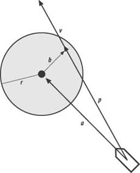

|
|
< Day Day Up > |
|
4.3 Obstacle AvoidanceThe flocking rules we discussed so far yield impressive results. However, such flocking behavior would be far more realistic and useful in games if the units also could avoid running into objects in the game world as they move around in a flock. As it turns out, adding such obstacle avoidance behavior is a relatively simple matter. All we have to do is provide some mechanism for the units to see ahead of them and then apply appropriate steering forces to avoid obstacles in their paths. In this example, we'll consider a simple idealization of an obstacle—we'll consider them as circles. This need not be the case in your games; you can apply the same general approach we'll apply here for other obstacle shapes as well. The only differences will, of course, be geometry, and how you mathematically determine whether a unit is about to run into the obstacle. To detect whether an obstacle is in the path of a unit, we'll borrow from robotics and outfit our units with virtual feelers. Basically, these feelers will stick out in front of the units, and if they hit something, this will be an indication to the units to turn. We'll assume that each unit can see obstacles to the extent that we can calculate to which side of the unit the obstacle is located. This will tell us whether to turn right or left. The model we just described isn't the only one that will work. For example, you could outfit your units with more than one feeler—say, three sticking out in three different directions to sense not only whether the obstacle is present, but also to which side of the unit it is located. Wide units might require more than one feeler so that you can be sure the unit won't sideswipe an obstacle. In 3D you could use a virtual volume that extends out in front of the unit. You then could test this volume against the game-world geometry to determine an impending collision with an obstacle. You can take many approaches. Getting back to the approach we'll discuss, take a look at Figure 4-8 to see how our single virtual feeler will work in geometric terms. The vector, v, represents the feeler. It's of some prescribed finite length and is collinear with the unit's heading. The large shaded circle represents an obstacle. To determine whether the feeler intersects the obstacle at some point, we need to apply a little vector math. Figure 4-8. Obstacle avoidanceFirst, we calculate the vector, a. This is simply the difference between the unit's and the obstacle's positions. Next, we project a onto v by taking their dot product. This yields vector p. Subtracting vector p from a yields vector b. Now to test whether v intersects the circle somewhere we need to test two conditions. First, the magnitude of p must be less than the magnitude of v. Second, the magnitude of b must be less than the radius of the obstacle, r. If both of these tests pass, corrective steering is required; otherwise, the unit can continue on its current heading. The steering force to be applied in the event of an impending collision is calculated in a manner similar to the flocking rules we discussed earlier. Basically, the required force is calculated as inversely proportional to the distance from the unit to the center of the obstacle. More specifically, the steering force is a function of the prescribed maximum steering force times the ratio of the magnitude of v to the magnitude of a. This will make the steering correction greater the closer the unit is to the obstacle, where there's more urgency to get out of the way. Example 4-12 shows the code that you must add to DoUnitAI to perform these avoidance calculations. You insert this code just after the code that handles the three flocking rules. Notice here that all the obstacles in the game world are looped through and checked to see if there's an impending collision. Here again, in practice you'll want to optimize this code. Also notice that the corrective steering force is accumulated in the same Fs.x member variable within which the other flocking rule steering forces were accumulated. Example 4-12. Obstacle avoidance
.
.
.
Vector a, p, b;
for(j=0; j<_NUM_OBSTACLES; j++)
{
u = Units[i].vVelocity;
u.Normalize();
v = u * _COLLISION_VISIBILITY_FACTOR *
Units[i].fLength;
a = Obstacles[j] - Units[i].vPosition;
p = (a * u) * u;
b = p - a;
if((b.Magnitude() < _OBSTACLE_RADIUS) &&
(p.Magnitude() < v.Magnitude()))
{
// Impending collision...steer away
w = VRotate2D(-Units[i].fOrientation, a);
w.Normalize();
if(w.x < 0) m = 1;
if(w.x > 0) m = -1;
Fs.x += m * _STEERINGFORCE *
(_COLLISION_VISIBILITY_FACTOR *
Units[i].fLength)/a.Magnitude();
}
}
.
.
.
If you download and run this example, you'll see that even while the units form flocks, they'll still steer well clear of the randomly placed circular objects. It is interesting to experiment with the different visibility models to see how the flocks behave as they encounter obstacles. With the wide-visibility model the flock tends to split and go around the obstacles on either side. In some cases, they regroup quite readily while in others they don't. With the limited- and narrow-visibility models, the units tend to form single-file lines that flow smoothly around obstacles, without splitting. We should point out that this obstacle avoidance algorithm will not necessarily guarantee zero collisions between units and obstacles. A situation could arise such that a given unit receives conflicting steering instructions that might force it into an obstacle—for example, if a unit happens to get too close to a neighbor on one side while at the same time trying to avoid an obstacle on the other side. Depending on the relative distances from the neighbor and the obstacle, one steering force might dominate the other, causing a collision. Judicious tuning, again, can help mitigate this problem, but in practice you still might have to implement some sort of collision detection and response mechanism to properly handle these potential collisions. |
|
|
< Day Day Up > |
|